Comparison Report: canonical-disk-growth-modality-pilot-gmax2p0-grate2p5-tend1p0-comparison
Generated 2026-04-06T08:04:45.240230+00:00 from commit 163e95a.
This report compares completed runs side by side without baseline semantics. Treat the numerical differences as descriptive unless explicit tolerances were intended for this comparison.
Status
pass
3 run(s), 0 fail signal(s), 0 warning signal(s).
Comparison Context
Peer Comparison
Current runs: 3. Baselines: 0.
Default policy: correctness drift fails, performance drift warns.
Execution
complete
Comparison validity: direct
Curator Notes
Read this suite as three linked families: a hydration pair, an osmotic trio, and a prestretch control. That ordering makes the biological story clearer than reading the runs alphabetically.
Suggested reading order.
- None
Key comparisons.
- None
Plot guide.
- Start with `area_ratio` and `max_u` to compare geometric response strength across scenarios.
- Use `flow_potential_range` and `p_eff_range` to read transport and pressure handling.
- Use `theta_eq_range` and `storage_strain_range` to identify hydration-driven state changes.
- Use the montage and `fields_grid5_norm.mp4` after the plots to localize where the response occurs spatially.
Warnings
- None
Interpretation
Read execution status first. If execution is incomplete, numerical deltas are descriptive only and should not be treated as validated physics drift. For baseline comparisons, timing and scenario-dependent differences may be expected even when correctness checks pass.
Scenario Reading
Canonical Disk Tissue-Phase Mass-Preserving Deformation g_max=2.0 (peer)
Mechanisms: hydraulic:closedpreferred_hydration
The four main cardinal lumens are preserved while a second diagonal microlumen family is interpreted as tissue-side precursor pockets under tissue-phase mass-preserving deformation; this setup injects no tissue or lumen source mass.
Model setup. geometry=disk, hydraulic=closed, fixed_mesh, dimensionless, hydration_on
Expected dynamics. Use this tracked scenario to reproduce the promoted tissue-phase mass-preserving deformation slice at g_max = 2.0.
Read first: area_ratio, max_u, theta_eq_range, storage_strain_range
Where to observe it.
- Use the trend plots to inspect area_ratio, max_u, and the derived range metrics.
- Use the montage/frame artifacts to see whether deformation localizes near the lumen or the outer wall.
Canonical Disk Linked Mass-Preserving Deformation g_max=2.0 (peer)
Mechanisms: hydraulic:closedpreferred_hydration
The four main cardinal lumens are preserved while a second diagonal microlumen family is interpreted as detached precursor pockets under linked tissue-and-lumen mass-preserving deformation; this setup injects no tissue or lumen source mass.
Model setup. geometry=disk, hydraulic=closed, fixed_mesh, dimensionless, hydration_on
Expected dynamics. Use this tracked scenario to reproduce the promoted linked mass-preserving deformation slice at g_max = 2.0.
Read first: area_ratio, max_u, theta_eq_range, storage_strain_range
Where to observe it.
- Use the trend plots to inspect area_ratio, max_u, and the derived range metrics.
- Use the montage/frame artifacts to see whether deformation localizes near the lumen or the outer wall.
Canonical Disk Lumen-Phase Mass-Preserving Deformation g_max=2.0 (peer)
Mechanisms: hydraulic:closedpreferred_hydration
The four main cardinal lumens are preserved while a second diagonal microlumen family is interpreted as detached lumen-side precursor pockets under lumen-phase mass-preserving deformation; this setup injects no tissue or lumen source mass.
Model setup. geometry=disk, hydraulic=closed, fixed_mesh, dimensionless, hydration_on
Expected dynamics. Use this tracked scenario to reproduce the promoted lumen-phase mass-preserving deformation slice at g_max = 2.0.
Read first: area_ratio, max_u, theta_eq_range, storage_strain_range
Where to observe it.
- Use the trend plots to inspect area_ratio, max_u, and the derived range metrics.
- Use the montage/frame artifacts to see whether deformation localizes near the lumen or the outer wall.
Run Table
| Label | Role | Scenario | Backend | Geometry | Solver | Restart | Status | Wall Time | DoF | Cells | Mass | Ratio | min_J |
|---|---|---|---|---|---|---|---|---|---|---|---|---|---|
| canonical-disk-growth-tissue-microlumens-gmax2p0-grate2p5-tend1p0 | peer | Canonical Disk Tissue-Phase Mass-Preserving Deformation g_max=2.0 | snes | disk | monolithic | startup | pass | 2819.79 | 18342 | 2972 | 0.734056 | 1.00039 | 1.40095 |
| canonical-disk-growth-linked-microlumens-gmax2p0-grate2p5-tend1p0 | peer | Canonical Disk Linked Mass-Preserving Deformation g_max=2.0 | snes | disk | monolithic | startup | pass | 2301.01 | 18342 | 2972 | 0.734056 | 1.00129 | 1.69555 |
| canonical-disk-growth-lumen-only-microlumens-gmax2p0-grate2p5-tend1p0 | peer | Canonical Disk Lumen-Phase Mass-Preserving Deformation g_max=2.0 | snes | disk | monolithic | startup | pass | 2624.98 | 18342 | 2972 | 0.734056 | 0.99865 | 0.761904 |
Status Checks
canonical-disk-growth-tissue-microlumens-gmax2p0-grate2p5-tend1p0 (peer)
- pass Accepted metrics rows present
- pass Run advanced beyond the initial state
- pass Run reached target time
- pass Final accepted step converged
- pass Final min_J is positive
- pass Post-processing completed
canonical-disk-growth-linked-microlumens-gmax2p0-grate2p5-tend1p0 (peer)
- pass Accepted metrics rows present
- pass Run advanced beyond the initial state
- pass Run reached target time
- pass Final accepted step converged
- pass Final min_J is positive
- pass Post-processing completed
canonical-disk-growth-lumen-only-microlumens-gmax2p0-grate2p5-tend1p0 (peer)
- pass Accepted metrics rows present
- pass Run advanced beyond the initial state
- pass Run reached target time
- pass Final accepted step converged
- pass Final min_J is positive
- pass Post-processing completed
Trends
Area Ratio
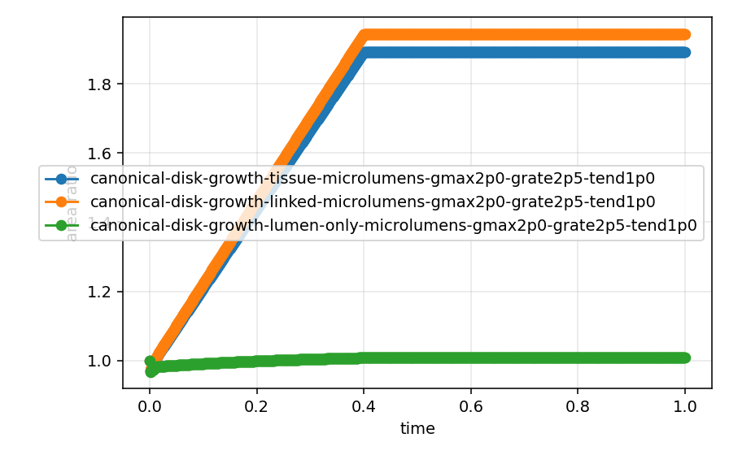
Max Displacement
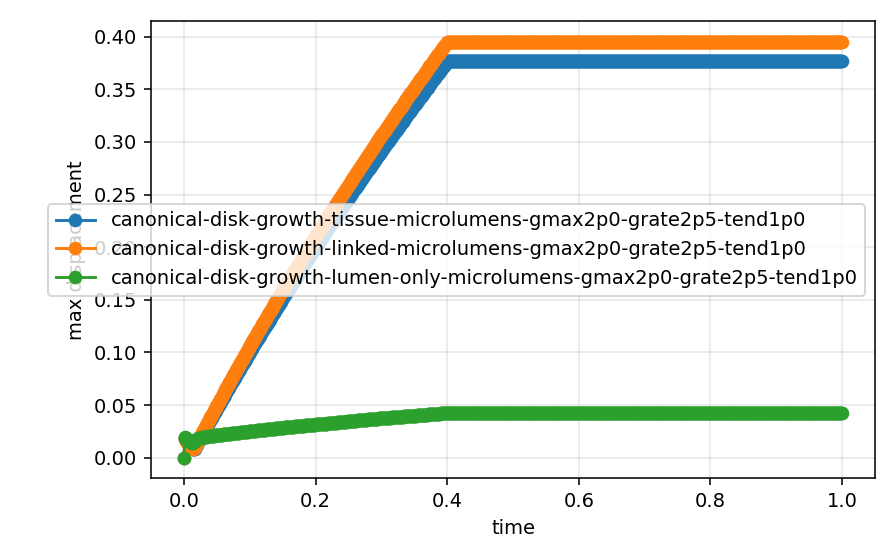
Lumen Ratio
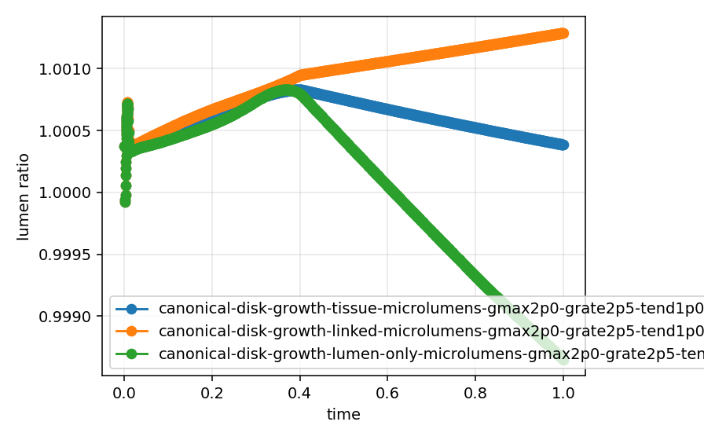
Total Energy (P-Form)
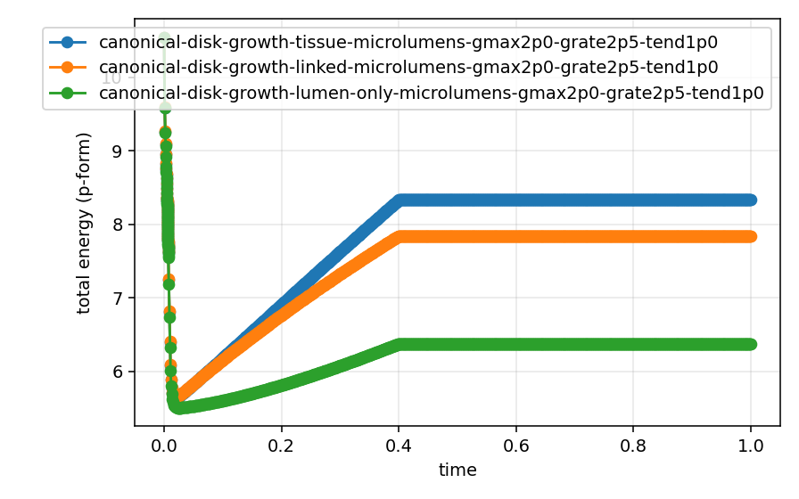
Theta-Form Energy
Cross-Form Energy
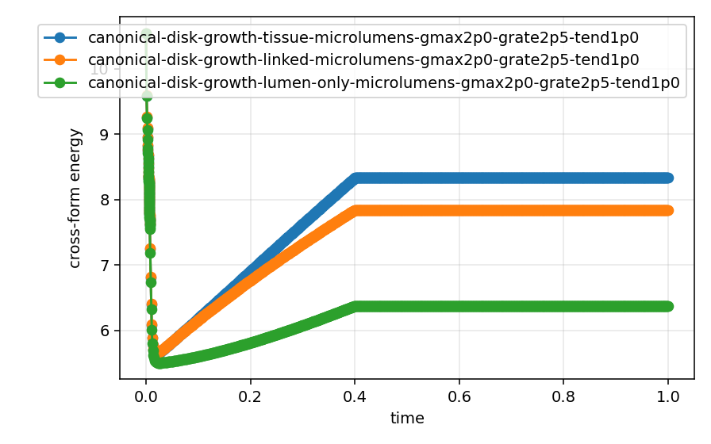
Mass
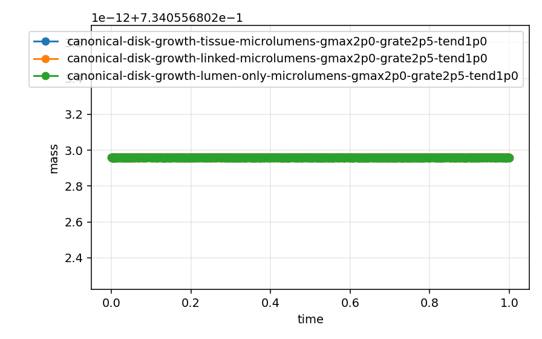
Split Iterations
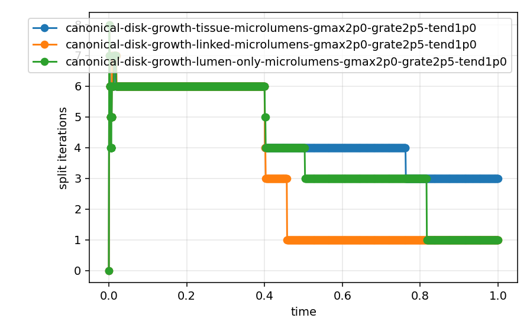
Mesh Cells
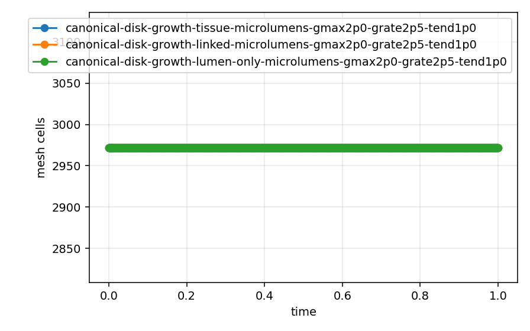
Flow Potential Range
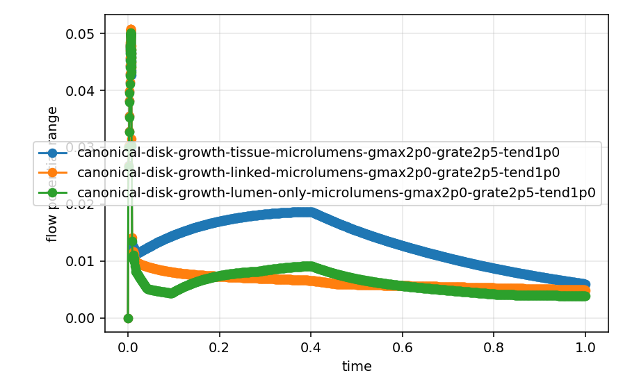
Effective Pressure Range
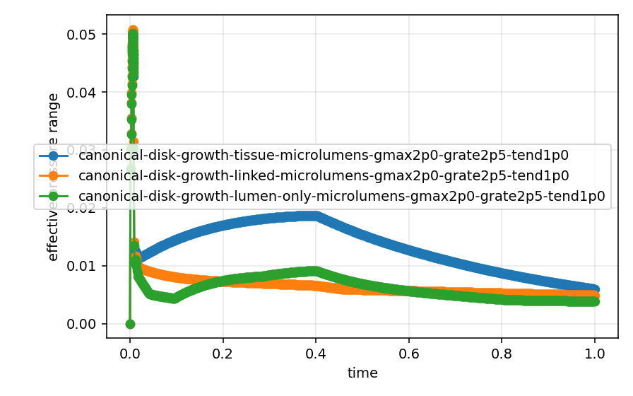
Theta_Eq Range
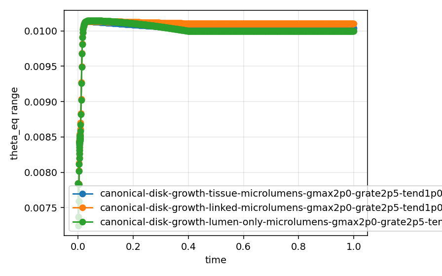
Storage Strain Range
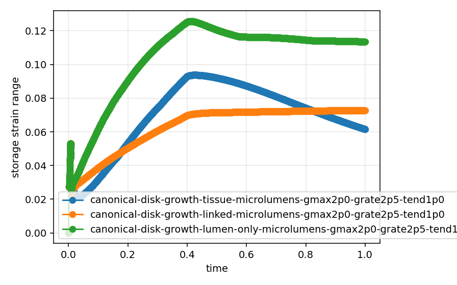
Wall Time
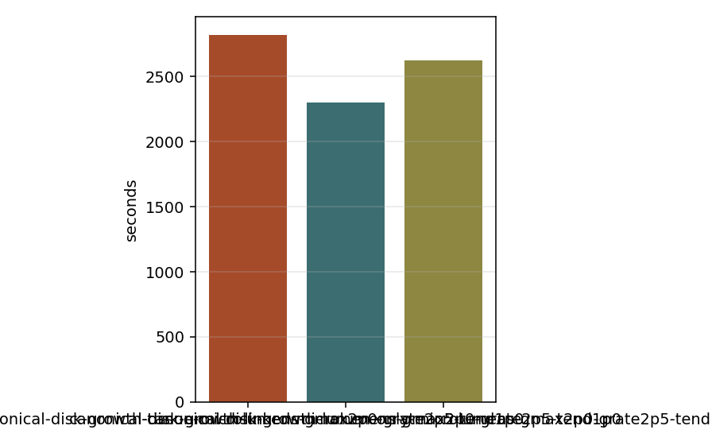
Artifacts
canonical-disk-growth-tissue-microlumens-gmax2p0-grate2p5-tend1p0
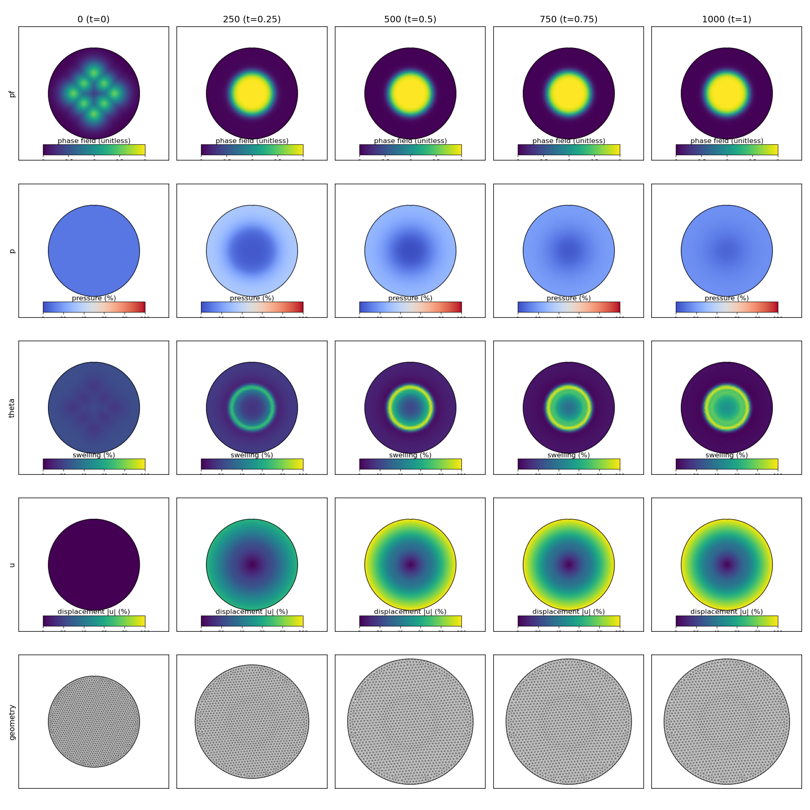
{kind=link}
{kind=link}
canonical-disk-growth-linked-microlumens-gmax2p0-grate2p5-tend1p0
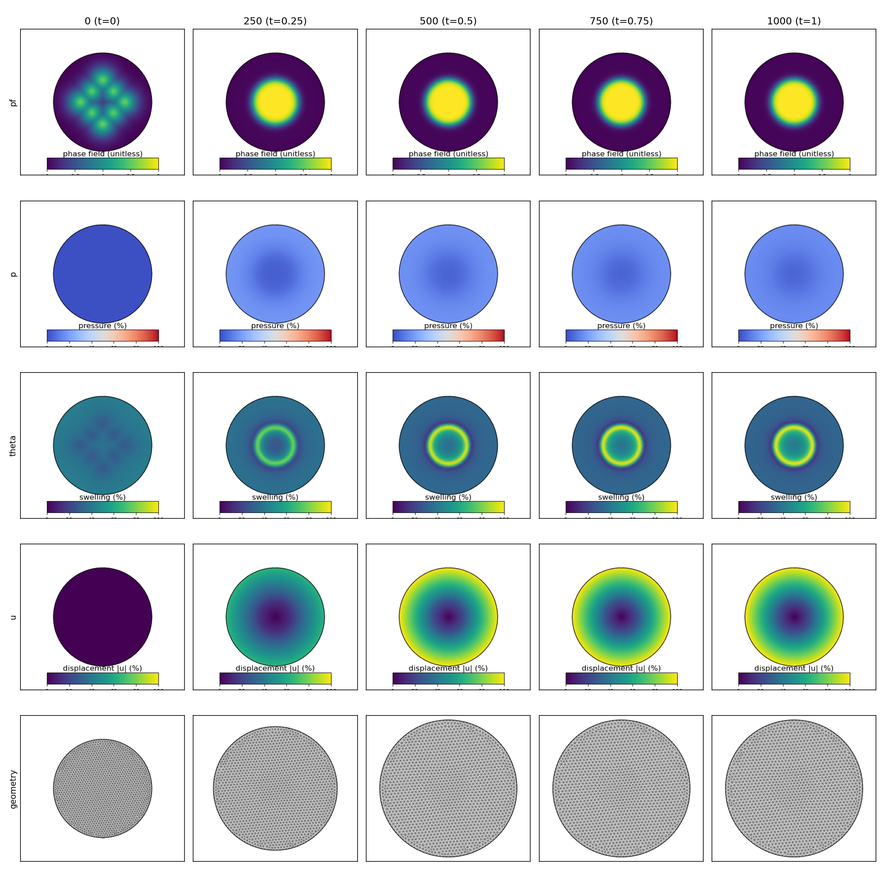
{kind=link}
{kind=link}
canonical-disk-growth-lumen-only-microlumens-gmax2p0-grate2p5-tend1p0
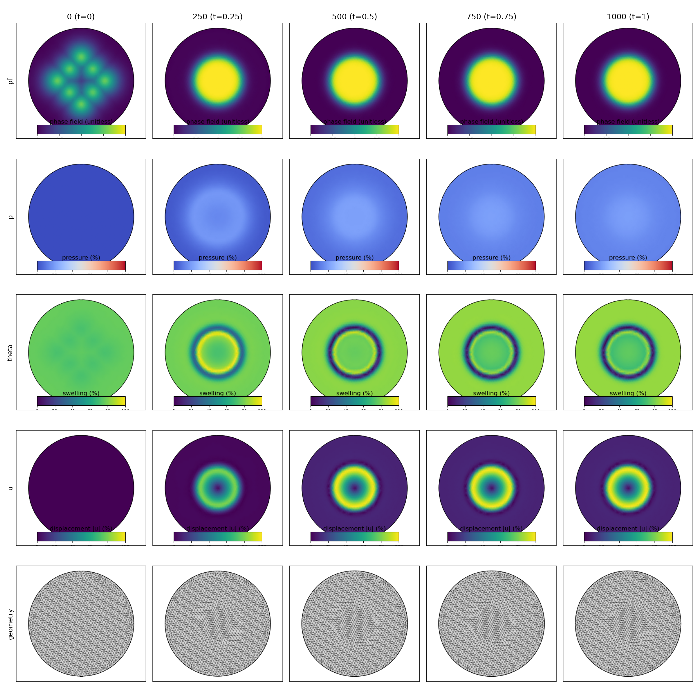
{kind=link}
{kind=link}